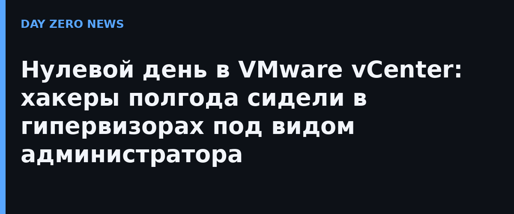

Broadcom 19 ноября выпустила экстренный бюллетень VMSA-2026-0009. Главное в нём — CVE-2026-123890: уязвимость обхода аутентификации в VMware Directory Service внутри vCenter Server. Атакующему достаточно сетевого доступа к уязвимому vCenter — учётная запись не нужна вообще. Успешная атака даёт административный вход в vCenter, а значит полный контроль над всеми виртуальными машинами под его управлением. Заодно закрыты ещё четыре уязвимости в SDDC Manager и VMware Tools for Windows.
Самое тревожное — эксплуатацию зафиксировали задолго до патча. Google Mandiant и GTIG описали кампанию группы Armory Castle (ранее UNC5221), которую связывают с китайскими государственными хакерами: первую атаку по CVE-2026-123890 они задокументировали в начале сентября 2026 года. Схема разведывательная, без шифровальщиков: злоумышленники сначала взламывали appliances удалённой поддержки BeyondTrust, через них проникали во внутреннюю сеть, ставили веб-шеллы (SLIMSAVAGE), поднимали права до root, а затем собственным инструментом на Go эксплуатировали vCenter.
Добычей группы становилась база каталога vCenter (data.mdb) и, что опаснее, ключи подписи SAML. Имея их, атакующие подделывали авторизационные токены — приём известен как Golden SAML: можно обходить двухфакторную аутентификацию и выдавать себя за легитимных пользователей сколько угодно долго, даже после смены паролей. Для этого Mandiant описала отдельный инструмент SAWSNAKE, а всего в кампании фигурирует семейство бэкдоров (CAGEMATCH, BEARBONES, LAZYBONES). Это классический пример того, как одна сетевая дыра в панели управления превращается в многомесячное присутствие в ядре инфраструктуры.
Официальных обходных путей Broadcom не опубликовала — только патч. Затронуты все версии vCenter, SDDC Manager и VMware Tools for Windows ниже исправленных, включая поставки в составе VMware Cloud Foundation, vSphere Foundation и Telco Cloud-платформ, независимо от режима Enhanced Linked Mode. Практический минимум: ставить обновления VMSA-2026-0009 как можно скорее, максимально ограничить сетевой доступ к vCenter (фаерволы остаются единственной временной мерой), а после патча — проверить список учётных записей SSO на посторонних администраторов, целостность ключей SAML и признаки веб-шеллов: при компрометации одних патчей может быть мало, нужен аудит всей цепочки доступа.